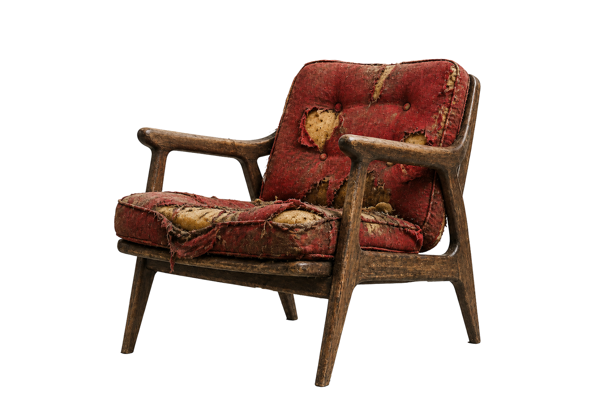
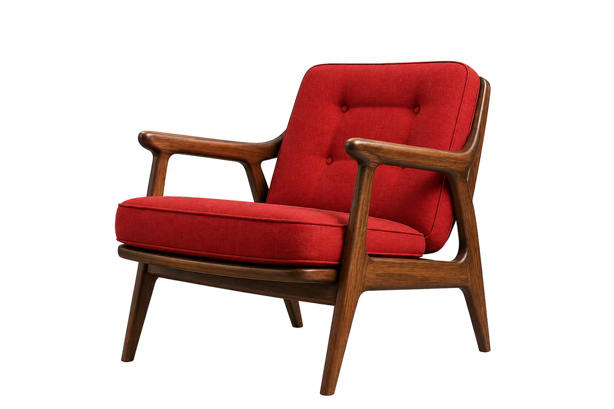
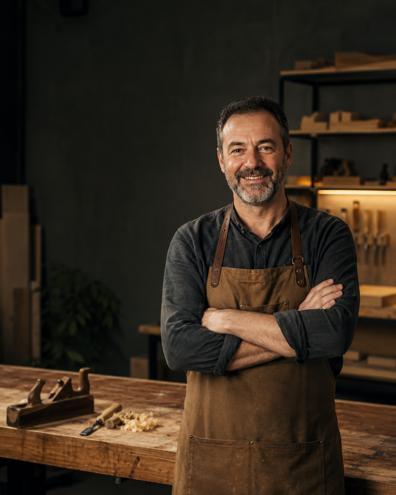
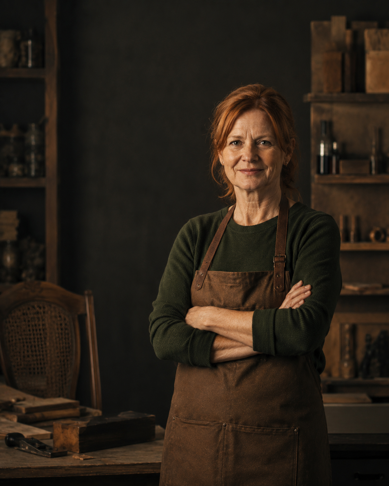
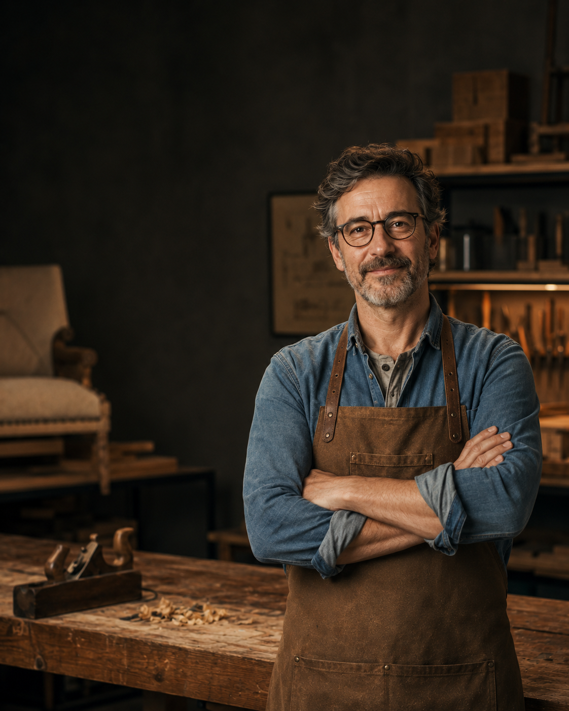
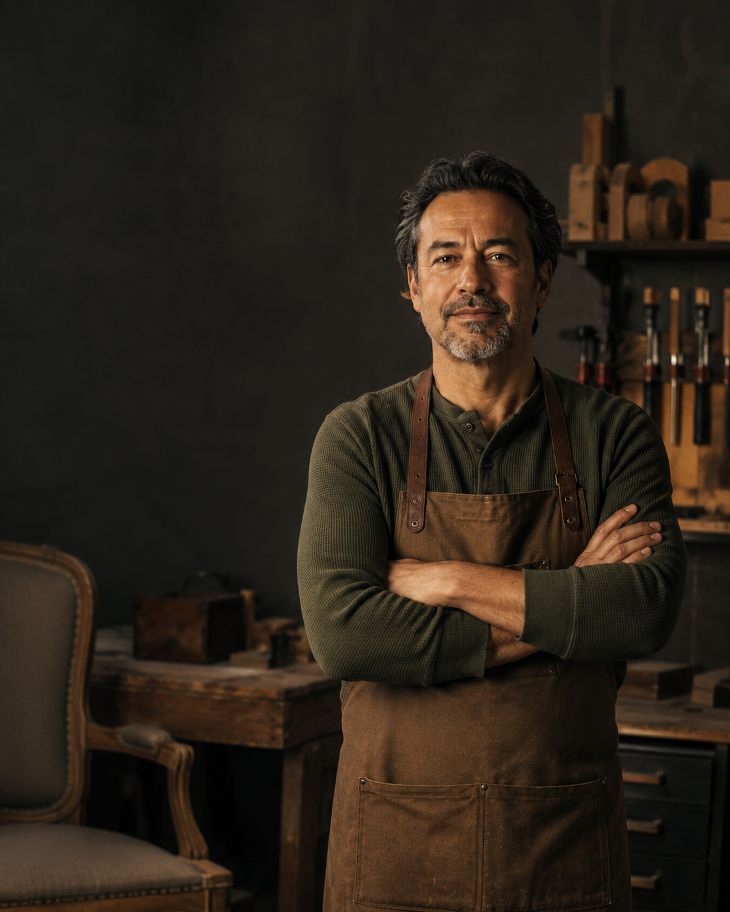
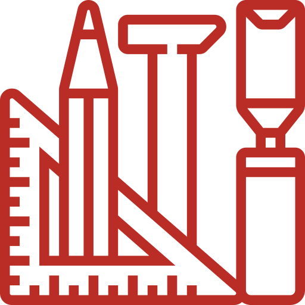
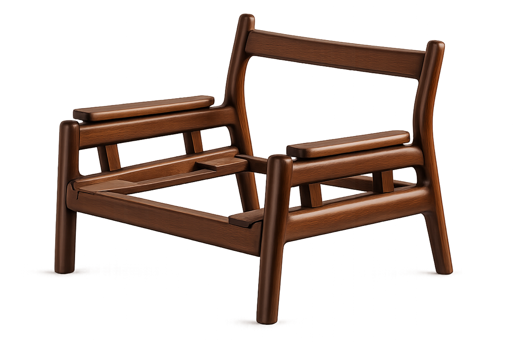

Modalidad
Clases virtuales
Aprendé a evaluar el estado real de una pieza. Identificá daños y riesgos para definir el plan de restauración.
Aprendé a identificar daños para definir
el plan de restauración adecuado.


Clases virtuales
4 encuentros
Lunes 18-21 hs
Máx. 10 personas
Un recorrido práctico por cada etapa de restauración. Aprendé a observar una pieza, reconocer sus materiales, diagnosticar daños y tomar decisiones.
Un recorrido práctico para observar daños y tomar decisiones.
Reconocimiento de maderas, metales, tapizados y acabados.
Lectura de marcas, roturas, desgastes y problemas estructurales.
Decisiones previas para intervenir sin borrar la identidad de la pieza.
Cómo documentar el estado inicial y planificar el trabajo.
Qué significa diagnosticar una pieza antes de intervenirla. Observación inicial, registro del estado general, identificación de señales de desgaste y criterios básicos para decidir cómo avanzar.
Cómo preparar correctamente una superficie antes de intervenirla. Limpieza inicial, elección de lijas, lectura de vetas, eliminación de acabados anteriores y criterios básicos para evitar daños durante el proceso.
Introducción al proceso de tapizado y renovación de asientos. Retiro del material anterior, revisión del relleno, elección de textiles, tensado parejo y cuidados básicos para lograr una terminación resistente.
Cómo proteger y terminar una pieza después de intervenirla. Preparación final de la superficie, elección de productos, aplicación por capas, tiempos de secado y cuidados necesarios para conservar el resultado.
Un equipo formado desde la experiencia de taller, combinando técnica y sensibilidad para acompañar cada proceso de restauración e intervención. Un equipo formado para acompañar cada proceso de restauración e intervención.

01 ProfesorTapicería
Tapicería, diseño industrial y técnicas de restauración aplicada.Tapicería
Textiles, costuras, tapizados y terminaciones finales de la pieza.
03 ProfesoraDiagnóstico
Análisis de materiales, daños y posibilidades de intervención.
04 ProfesorCarpintería
Reparación estructural, ensambles y criterios de restauración.
05 ProfesorTerminaciones
Acabados, protección, detalles finales y criterio de intervención.Accedé a una experiencia completa de aprendizaje con materiales, herramientas y acompañamiento para incorporar técnicas aplicadas desde el taller. Materiales, herramientas y acompañamiento para aprender desde el taller.
Clases teórico-prácticas
Guías, fichas y recursos de consulta
Constancia digital de asistencia y participación
Recibís una constancia digital de asistencia y participación.
Accedé a guías de observación, fichas y material de consulta.

Cuatro encuentros teórico-prácticos con intercambio y análisis.
MEDIOS DE PAGO
Pago al contado
20% de descuento Precio final: $71.200Cuotas sin interés
cuotas sin interés Cuotas de $14.800Aprendé a reconocer lo que cada mueble guarda en su interior. Desde la estructura hasta la terminación final, cada capa revela una parte de su historia. Conocé las capas que construyen un mueble. Desde la estructura hasta la terminación final

Analizamos la estructura para evaluar su estabilidad, reconocer el sistema constructivo y conservar las uniones originales de la pieza.